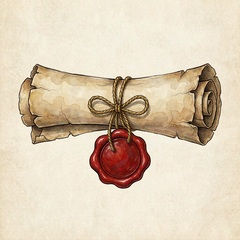
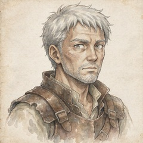
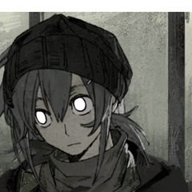
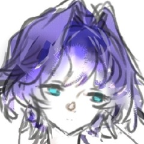

回放 · 暗相卷 第一章 Part 3

前情回顾：灰雾之中，两个异界者在偶然之下穿越到名为恩格海姆的世界中。然而，两个人似乎被卷入一个莫名的事件中——骑士之死。两个人被住在这里的本地人科尔险些当做是凶手，误会解除后，共同前往崖镇，准备向这里的民兵队队长报告这次诡异的事件。
听闻塞莱斯特所描述的情景，马格尔队长一脸的不可置信。他完全无法理解，骑士，会这样被一句命令式的魔法杀死。不过，他依然还是很快恢复了镇定，他收起刚刚惊恐的面色，皱着眉叹了口气。

我想，我需要拜托你们一件事…

塞莱斯特“为什么？”
没什么表情变化，只是平静的问道。
有报酬，可以吗？
马格尔问道。
思考了一下，开口问道。
”报酬是多少？“
”以及，什么事？“

普绪克好想走…
抱着赛特莱斯的手臂，像是小孩子一样的听着他们讲话。
他会答应吗？
所以，为什么抱着我？
好像挂在了上面。
我想请你们先不要将这件事告诉其他人。你们见到的骑士，应该是奥兰联盟六芒星骑士团的一员。正常来说，像他们这样的身份和地位，是不太可能会出现在我们这附近的，他们所在的位置应该是奥兰教廷，王室中。我想，如果这件事被说出去…骑士团的人来寻，届时我们如果交不出凶手…我们会受到什么样的惩罚我不敢想…
听起来，到这里来的事，很麻烦。
骑士团，是坏的吗？
眨了眨眼睛，脑袋抬起来，看向赛特莱斯。
其次，我想临时雇佣你们作为民兵队的一员。因为你们是见证者。也知道发生了什么事，我想也许还有一些我们可以相互交流的情报线索。你们放心，报酬上，我会给到我所能给的最多，这个镇子从来没有发生过这么大的事情。
当然，就算你们拒绝，我也明白其中的缘由。如果拒绝，我也会付一定报酬，我只希望你们不要对其他人讲起这件事就好。
不想去…
抬起的脑袋立刻低了下来，像是躲藏的鸟一样，没有吱声。
这是忽悠吧。
想了想，看向对方道。
“浮动的价格让人不安。我需要具体的报酬才能考虑这件事。”
“你知道的，已经死了一个骑士。风险，很大。”
如果你们肯答应，我将按照400枚铜币。外加五日的远行干粮的报酬给你们，你们是流浪者，这些钱和干粮完全足够应付接下来的日子。如果你们拒绝，我也会支付100铜币，作为一个交易，希望你们不要将这件事说出去。
骑士，好穷。
”雇佣，需要详细条款。“
”工期，交付要求，以及定金。“
”你刚刚说，相互交流的情报线索。所以你开出的400枚铜币。外加五日的远行干粮的报酬，应当不包括调查出结果吧。“
当然，调查出结果是我们的事情，无论调查的结果如何，我们都会付你们薪酬。400铜币，临时雇佣四天，如果四天后还需要，我会按照每日100枚铜币的价格支付，届时看你们是否还需要续约，你们看如何？
他想了想，又补充了一句：
顺带说明一下，这里不包吃住，旅店每晚住宿大概在5铜币左右。
听起来，很多钱...
将它换算成夸特罗，在心里想了想。
可是，很危险...
那个人，打不过。
”我们需要包住。以免某些先生来找我们的麻烦。“
说完目光看向一旁的高矮卫兵。随后看向队长。
”这是裙带关系，先生。我本来可以不用注意这些。“
“然后需要给我们总款的两成，作为定金。”
“受到定金后，我们会和你们交换情报，并协助你们进行调查。”
马格尔摇了摇头。
我会提前支付你们4天的报酬，一共400铜币，今天晚上可以到我家来领取。至于包住…如果你们三个不嫌弃在我家住的话倒是可以，我们家地方很小，目前只有我一个人。
但是只有两间屋子…所以……
你们考虑看看。
目光看向挂在自己手上的人。
”你可以吗？“
“我要和赛特莱斯一起住…”
听到只有两间屋子的时候，把他的手臂抱得更紧一点，小心翼翼的说着。
目光看回马格尔的方向。
“只要不会漏风，没有问题。”
“既然定下了。”
“马格尔队长，我会祈祷你能回来的。”
还有，我要说明一点。
“请说。”
雇佣你们，并非是相信你们，是因为我不相信你们，才要选择你们。我不喜欢将话藏着，这是我的想法。如果你刚才拒绝，那么在我调查出结果之前，我应该也不会轻易让你们离开。非常抱歉。
但既然你接下来了，我很感谢你们，我发自内心的谢谢。
还有，雇佣，就从今日开始算起，一共500铜币。
“你给出的价格可以让我理解。”
并没有对对方的话有什么反感。
“我会期待晚上的定金。”
唔…
想了想这个人说的话…
赛特莱斯不打算跟他们去…
但是他答应了…
我们需要武器…
马格尔点点头，刚刚焦虑的眼神中多了一丝光亮。
带他们去镇子上认一下，包括我家的位置，以及他们需要先采买一些装备，钱可以先从你这里拿，我和科尔先去事发地点。我们应该会很快回来。
他对矮个子民兵说道。
啊？从我这里拿？不是，队长……
矮个子的面容扭曲起来，就差哭出来了。
看向矮个子。
那要不然，你跟我去？然后将尸体抬回来。
马格尔问道。
不，不了。我还是拿钱吧…
矮个子咧了咧嘴。
见他应了。
科尔，这把剑先还给你，但是在城镇内的时候，你还是要交给我保管。
马格尔将身后的短剑交还给科尔。
对矮个子露出一个笑。
科尔快步走上前，小心翼翼的将短剑抱在怀里，然后别在腰上。
马上就有武器了…
听到矮个子的话，稍微抬起头一点，去看看高个子的表情，看看他是不是露出遇到麻烦事的表情。
搬尸体，不好吗？
矮个子叹了口气，然后低着头有些沮丧的站在一边去了。
那我们出发了，晚上见。
马格尔对你们说道。
“晚上见。”
收起笑容，对马格尔点了点头。
这一次没有抬起头，脑袋仍然是低垂的、怯生生的，一侧的头贴着人手臂，稍稍面向马格尔的方向，就这这个高度再对着他点了点。
“..再见....”
马格尔对塞莱斯特和普绪克都点了点头。
科尔也对你们挥了挥手。
晚上见。
再一次点了点头。这一次说的顺畅了一点。
“再见..”
”嗯。“
对科尔只是点了一下头。
科尔和马格尔转身离开，走向你们来时的山路。
矮个子士兵垂头丧气的走到你们身前，他侧过头对旁边的高个子士兵说道：
你守门，我带他们去咯。
高个子士兵笑了笑。
晚上喝酒的钱都要没了吧，我等你光着屁股回来，哈哈哈哈…
“你！”矮个子士兵没有应话，他生着气的带着你们朝镇子里走去。
看了看高个子士兵身上…
现在不走了…不可以随便偷他的东西…
于是放下了这个念头，只是跟着赛特莱斯的身边。
不知道这里...有什么可以买....
拉了一下自己被拽着的一边外套。拽好衣服。然后跟上矮个子。
被拉了一下，茫然了一下。随后拽的紧一点，跟上赛特莱斯。
初入小镇，正午的阳光略晒，晒在身上，先前那股凉意已然消散。小镇的街道只有一条主干道，街道两旁的人不多，少许摆摊的，卖的都是一些瓜果蔬菜。前方，两旁开始渐渐浮现出几个商铺。<裁缝店><杂货店>
调查DC，要求12
塞莱斯特发现，这街道上的人，似乎都有一些微微的咳嗽。有的人甚至戴上了面巾。
那么，面对杂货店和裁缝店的你们，要去吗？
“最近感冒的人多吗？”
看向矮个子问道。
“多啊，这不是前几天刚下过雨吗？”矮个子回道
“下雨和流感不一样。”
说着指向杂货店。
“去那家。”
随后带着普绪克往里面走去。
“流感是什么？”矮个子暗自嘀咕了一句。
抬起头看了一眼赛特莱斯指的方向。
没有铁匠铺…
唔。
乖乖的跟着赛特莱斯去杂货店。
会病死人的地方....
杂货店的老板是一个中年妇女，她戴着一块粉色的面巾。“中午好，客人，要来点什么？”
将围巾往脸上拉了拉。
不知道流感是什么…
唔…
听着他们的对话，想到。
看起来真的很偏…
跟着走入杂货铺，目光看了看这里有的价目表。
“两个大面包。两块火石，四根蜡烛，两包止血粉，两包草药包，两把小刀。”
然后转头看向矮个子。
“他付钱。”
“这一个面包就够你们两个吃了吧。”矮个子说道。
目光在麻绳上多看了一会…没有出声。
“我们两天没吃饭了。”
“作为流浪汉，这是理所当然的事情。”
“还要一捆麻绳。”
“喂喂……”矮个子低着头开始数钱，他从钱袋里掏出一堆铜币递给了老板。
抬起头看看赛特莱斯的下巴，眨了眨眼睛。
老板将货品打包好后递给你们。
接过打包好的商品，对半分了一袋，然后把麻绳塞进其中一个袋子。递给普绪克。
拿到自己的袋子。
“去下一个。”
看他接过了商品，在分东西，懂事的松开手，从他手里接过自己那一份，在身上放好，然后才拉着赛特莱斯的手，看向矮个子。
塞莱斯特获得：大面包*1，火石*1，蜡烛*2，止血粉*1，草药包*1，小刀*1
一手抱着袋子，一手被牵着。
为什么又牵我？
矮个子不情愿的带你们走到街对面，那是一家挂满了衣服的裁缝铺。
老板是一位男性，身着算不上优雅。“这里有上好的料子，请问要来点什么？”
看完了全部的内容。
好像…没有特别重要的…
如果暂时不离开的话…
对身后的矮个子指了指厚羊毛斗篷。
“要这个。”
“要这个。”
“好嘞！”老板笑着就去柜橱后面取了。
“等等…等等……现在还没入冬呢！？你要这个做什么？”矮个子震惊的看着你。
“我怕冷。”
看着他挑的东西，感受一下现在的温度，问道。
“赛特莱斯…怕冷吗？”
“你们这下雨。”
“很需要。”
“那也不至于羊毛斗篷都穿上吧？”
毫无助纣为虐之心的说。
“还有内衬。温暖。”
“等会儿你要是没穿，你要把钱退给我。”矮个子说道。
“啊？不是，等会儿，你什么体质啊？还要内衬？”
“哦。还有防水蜡布。”
“……这东西你是认真的吗？用来做什么的？”
“穿的。”
“你最好是。”
于是小声的补了一句。
“皮护腕。”
“？小妹妹，你还不识字，不要捣乱。”矮个子的输掉。
拽赛特莱斯。
“要那个。”
“皮护腕。”
“你够了…”
“谢谢。”
有礼貌的跟着说。
“谢谢。”
矮个子的人一脸无奈的掏出铜币递给老板。“给！都给他们！还有那个防水蜡布！给我拿过来！我要套他头上”
“还有那个护腕啊，最好要那种能拿来砸核桃的，他们力气大。”矮个子有些愤怒的说道。
“那没有这种护腕，我这里不卖假货的。”店老板说道。
“要，都要，那就他们刚刚说的，你听到了吧，都拿好吧！我这张嘴真的是贱啊……贱啊……”矮个子士兵恨不得抽自己几巴掌。
“呵。”
看到矮个子的动作。哼笑了一声。
为什么要这么说呢。
看着矮个子的动作，有些不明显的疑惑。
嗯…赛特莱斯喜欢看别人生气？
厚羊毛斗篷、内衬、防水蜡布、皮护腕，店老板将东西都打包好了，同时他开始向你们介绍起一款他店内的鞋子。“对了，客人，这个是本店最新推出的一款女款靴子，非常适合秋冬季穿，这款靴子呀，可是用了上好的皮革…”
羊毛滚边短靴（女式） 脚部御寒 +1； 22 铜
看向普绪克。
看了看那双靴子，对着店主的方向摇了摇头。
“好的，那欢迎下次再来！”店老板将货品打包好递给了你们。
将衣服套到身上，然后将刚刚买的打火石和蜡烛以及草药用防水蜡带包好，随后看向矮个子。
“还有别的店吗？”
松开了赛特莱斯，在他拿好以后，从东西里面拿出护腕，套在自己的手上穿戴好。
把内衬也递给普绪克。
塞莱斯特获得：厚羊毛斗篷*1、防水蜡布*1、皮护腕*1
普绪克获得：内衬*1、皮护腕*1
看着他递过来的内衬。
眨了眨眼睛，抬起手把它抱在怀里。
“可以走了吧？”矮个子士兵眼神已经黯淡无光了。
想了想。
“可以。”
两手抱着东西走出店铺，然后看向矮个子。
“找个地方。”
“说一下最近的失踪。”
抱着东西，于是只能亦步亦趋的跟在赛特莱斯身边。
“哦，那就去队长家吧，这个可以边走边说。”矮个子前面带路。
点了点头，跟上他。
跟着他们走出去，目光看一看路上的行人，尝试判断一下他们的情绪。
（其实也差不多了，别看修正值给的少，但是其实总共就20点）
你们的眼睛扫过这些路人，他们咳嗽的异常，且你们观察到他们将自己捂的有些太过于严实了，似乎比起秋日，更惧怕寒冷，他们的手背上似乎微微的泛红，那是一种很奇怪的肤色，好像皮肤变得透明，可以看到血在皮肤下游走。
疾病..?
看上去不像.....
于是靠近了一点赛特莱斯。
好危险...会和红袍子有关吗..
看了眼路人的情况，思考着，将围巾围住半张脸。收回目光。
矮个子民兵走在前面。“说起来最近的失踪，应该是几个月前就出现了。我们镇子几个月前爆发过一场很大的瘟疫，本来镇子的人就不多，病死了四五个，又失踪了两三个。我们当时也去四下寻找，但是没有什么结论，完全找不到失踪人的痕迹。”
“瘟疫后来怎么处理的？”
“后来，镇子上有一个叫斯诺姆的医生。他是一个厉害的医生，他做出了一种抑制药剂，让那些健康的人都可以免遭瘟疫。”
“当时的瘟疫病症是什么样的？”
安静的听他们的对话，注意着眼前的矮个子有没有什么生病的迹象。
“流鼻血，很明显的症状，到了很严重的阶段，鼻血就完全止不住。然后整个人会开始觉得晕，也不知道是不是因为流血太多了。”
普绪克观察到这个矮子没有什么疾病的初期症状，挺健康的
“失踪频率有规律吗？”
矮个子思索了片刻随后答道：“没有规律，也因为失踪这件事，队长命令我们严守镇子的出入口。但是很奇怪的事情还是发生了，我们全天守岗，连瞌睡都不敢打，确定没有人出镇，但还是有人失踪了。”
“在镇子里...消失了？”
“对，消失了。”矮个子十分肯定的回道
尝试着判断他先前的语气里是否有疑惑或者迟疑的情绪。
“年龄..?”
“年龄？说起来，什么年龄的都有，不过…”他思索了一会儿。“你这么说还真是……好像，没有小孩子。都是成年人”
调查，DC10
在他讲述着这段过往时，塞莱斯特听出他的语气中是比较肯定的，没有什么犹豫，想必当时确实做了很多防御措施。
思考着，
“魔...嗯....非自然现象？就像魔术一样？”
“不清楚，我们只是知道，这个人好像就一夜之间蒸发了。但是夜间的巡逻我们也没有断过，如果有人出镇一定会知道的。怪就怪在这里。”
“最近镇子里有动过土吗？建造或者修建储物仓之类的。”
“没有，好多年了。十年前，崖边下面发现了一处矿，当时我还年轻，跟着参与挖矿洞，那是个铜矿，里面非常大，原本是说要挖到镇子这边来，做矿道，方便工人采集往返，但是后面因为悬崖常年被风化，且临近海边，潮湿，很不安全，塌方了两次后，就只能将那里封死了。”
“你要是说镇子里，那倒是没有。”
“嗯…矿洞…最后挖到哪里了？”
“那不知道了，我是最早退出来的那一批，我当时年纪不大，矿洞塌了第一次我就离开了，我父亲也不让我继续做了，就直接选择来民兵队这边做起。”
“那个矿洞，后来还有人管吗？”
“这个我不清楚，你们可以问问罗曼镇长，他肯定知道的，包括现在的矿洞也是他负责的。”
“嗯..如果受伤了，去找谁？”
“现在没有医生咯。谁也找不到了。”他耸耸肩说道。
”那个斯诺姆的医生呢？“
回忆着刚刚提过的名字。在说出来前听到了他说，点了点头。
“死了。”矮个子士兵叹了口气，语气略带忧伤的回道：“他在做出抑制药剂前就感染了瘟疫，那个药剂只能防止瘟疫入侵，但无法治疗瘟疫。”
听着话歪了歪头。
“他有同伴吗？”
“同伴？没有，不过他有一个女儿……”矮个子士兵的话音刚落……
就在这个时候，你们看到右手边的小巷子里突然窜出一道人影。
敏捷DC可避开，需求10
吓一跳的把赛特莱斯往后拉。
普绪克需要再过个力量DC，难度5
见到人影的一刹那，普绪克下意识的躲闪，速度极快，下一秒，她又将塞莱斯特向身后拉去，两个人快速的退后两步。
“扑通…”
被拽后愣了一下。
好快。
黄色、红色、白色、蓝色。几种颜色的花瓣散落满地。
看一眼，是什么东西摔出来了。
紧紧的拽着赛特莱斯，警觉的盯着来人。
那是一个有些莽撞的小女孩，她倒在地面上，她的怀里抱着一小捆绿色的草药。